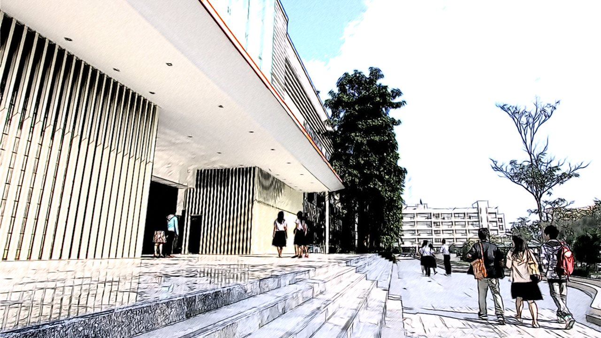
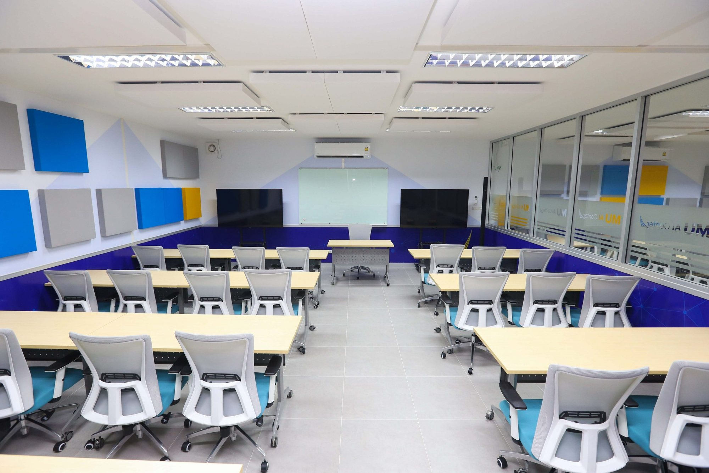
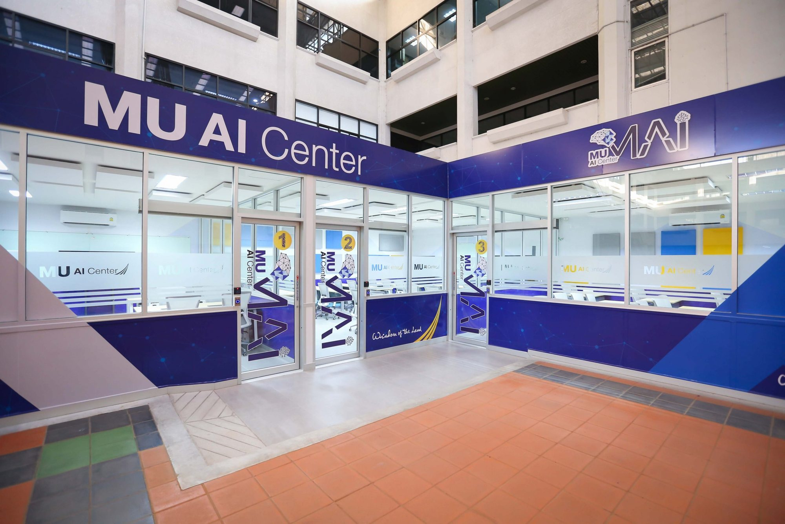

Project type 01
HT
Clinical data dashboard
Turn clinical data into a working interface a clinician could use.

Interactive 3D model of the Faculty of ICT building. Click or tap it, or drag it, to turn it; scrolling through this section also turns it.
B.Sc. in Information and Communication Technology International Program · Thailand
An applied ICT degree inside a university known for medicine. Four years. English-taught. Built around what you make.
Faculty of ICT building · Salaya, Thailand
B.Sc. in Information and Communication Technology (International Program)
The applied ICT degree that lets Norwegian students specialise where technology meets health and business — with a project portfolio, an internship network across seven countries, and a Lånekassen financing route.
Projects, prototypes and systems you design and build yourself.
Internship and research placements with partner universities.
Lånekassen-compatible costs, explained step by step.
01 · Portfolio
By graduation you will not describe your skills. You will show them: projects, prototypes and systems you designed and built yourself.
129 credits, no fewer: 30 in general education, 93 in specialisation and 6 free electives. Four years, eight tracks, English-taught.

Illustrative project types from an activity- and project-based curriculum.
Turn clinical data into a working interface a clinician could use.
Instrument a network and surface what is breaking, live.
Ship a working storefront, then read its numbers.
How the programme teaches: active learning, activity-based and project-based learning, guided application alongside core theory.
02 · Rankings
A degree you can check. Mahidol University is 345th in the world (QS 2027) and 55th in Asia (QS Asia 2026).
345th
in the world.
55th
in Asia — a joint position.
551–600
worldwide.
146th
in Asia.
Institutional rankings for Mahidol University, reported in the Faculty’s Information Pack, November 2026. They are not programme-specific rankings — they are a benchmark anyone can look up.
Official programme page (opens in a new tab)03 · Health and technology
Most ICT degrees teach you software. Ours sits inside a university known for medicine — so you can specialise in health data, medical informatics and clinical systems.
One of the Faculty’s research clusters — ICT applied to real health data, inside a health-science university.
Coursework and projects on the systems that support care: records, signals, decisions and interfaces.
Being built
A new Intelligent Digital Hub in Medicine (IDHM) is being built for the Faculty — a place to learn and work with advanced computing and AI in medicine.
Research clusters listed by the Faculty, November 2026 — confirm current activity with the Faculty.

04 · Internships
One degree, several countries: internship and research placements with partner universities in Germany, Japan, Taiwan, Malaysia, Australia, China and South Korea.
Mobility is built into the programme, so your network does not wait until graduation.
Partner universities include Germany, Japan, Taiwan, Malaysia, Australia, China and South Korea. Confirm the current list with the Faculty before you apply.
05 · Applying and funding
You may not have to fund it alone — and we will show you every cost and every step: Lånekassen support, a full cost breakdown, and a five-step application checklist.
90,000 THB / semester
Flat fee from the 2023 academic year. Fees are published by the Faculty of ICT — confirm current fees for your intake.
Norwegian students may be eligible for Lånekassen support. Check current eligibility with Lånekassen.
No surprises, no missing documents.
Mathematics: SAT Maths 600 · ACT Maths 25 · AP Calculus AB/BC 4 · IB HL Maths or CS 4 (SL 5) · GCE A-Level Maths B · Gaokao Maths 70. English: IELTS 5.0 (each band ≥ 5.0) · TOEFL iBT 60 (each ≥ 15) · TOEFL ITP/PBT 500 · TOEIC 600 · Duolingo 80 (each ≥ 75) · SAT EBRW 400 · IB HL English 4 / SL 5 · GCE A-Level English B.
Diploma or certificate, transcript, passport or ID, photo, a two-page statement of purpose, and your maths and English test scores. Achievements are optional.
The International Direct Admissions window is open 1 September 2026 – 15 May 2027. The application fee is 600 THB and is non-refundable.
One intake a year, August start. Confirm your offer and next steps with the admissions team: ictadmission@mahidol.ac.th.
Lånekassen’s application deadlines are 15 November and 15 March. Norwegian students may be eligible for Lånekassen support — check current eligibility with Lånekassen.
Eligibility and documents are published by the Faculty of ICT — confirm the current requirements for your intake.
Explore admission requirements (opens in a new tab)Recognised through Norway’s HK-dir recognition guidance — check the current assessment for your situation.
Tracks
No fewer than 129 credits — 30 in general education, 93 in specialisation and 6 free electives. Eight minor tracks, from artificial intelligence to software engineering.
Machine learning, intelligent systems and the science behind them.
Algorithms, data structures and the foundations of software.
Data modelling, databases and analytics for real systems.
Health data, medical informatics and clinical systems.
Information systems that run organisations, from process to decision.
Interactive media, digital experience and game technology.
Networks, cybersecurity and the Internet of Things.
Designing, building and shipping real software in teams.
Track descriptions are indicative; see the current curriculum on the Faculty’s programme page. (opens in a new tab)
Apply
Applications for International Direct Admissions are open 1 September 2026 – 15 May 2027.
Book an information session with the admissions team.
Faculty of ICT, Mahidol University
999 Phutthamonthon Sai 4 Road
Salaya, Nakhon Pathom 73170, Thailand
Published by the Faculty of ICT; confirm current fees and dates for your intake. Recognition is assessed through Norway’s HK-dir recognition guidance — check the current assessment for your situation.